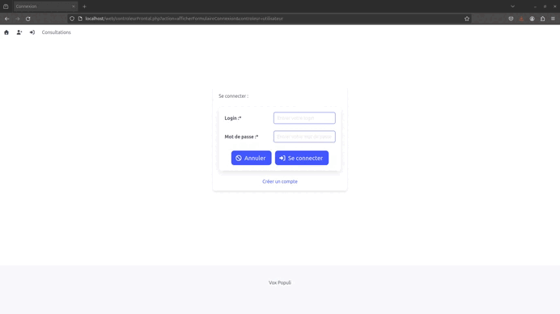
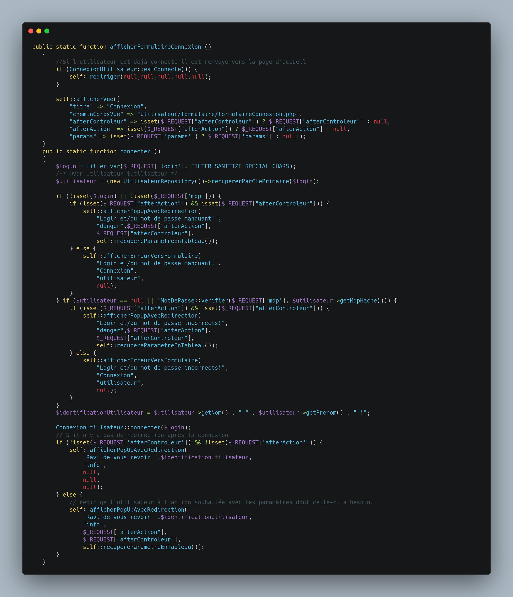
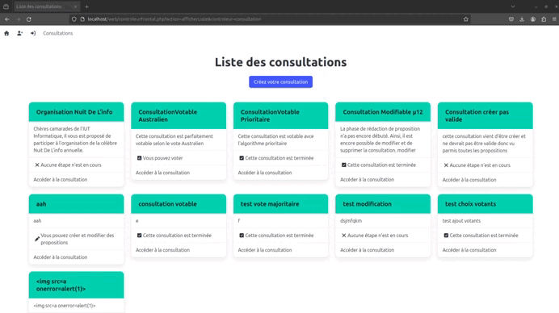
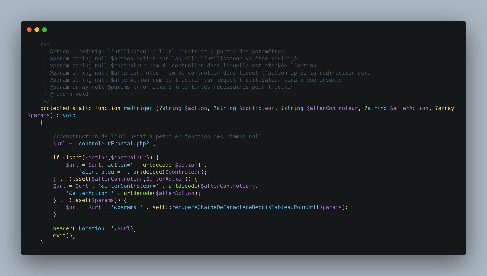
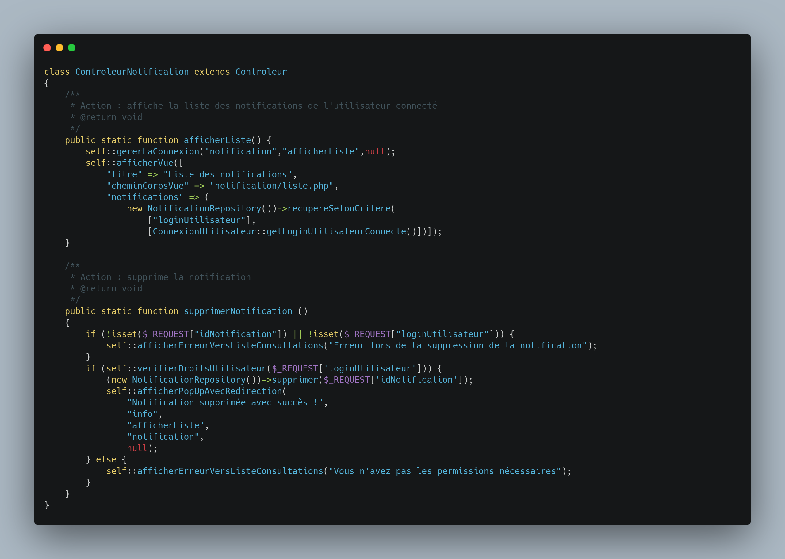
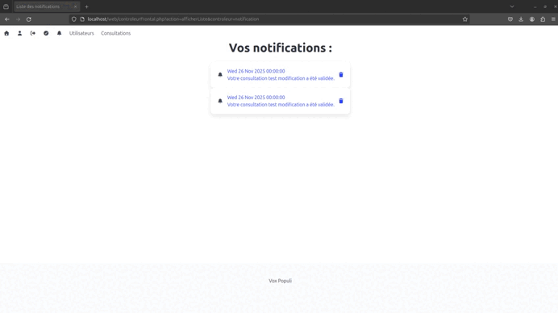
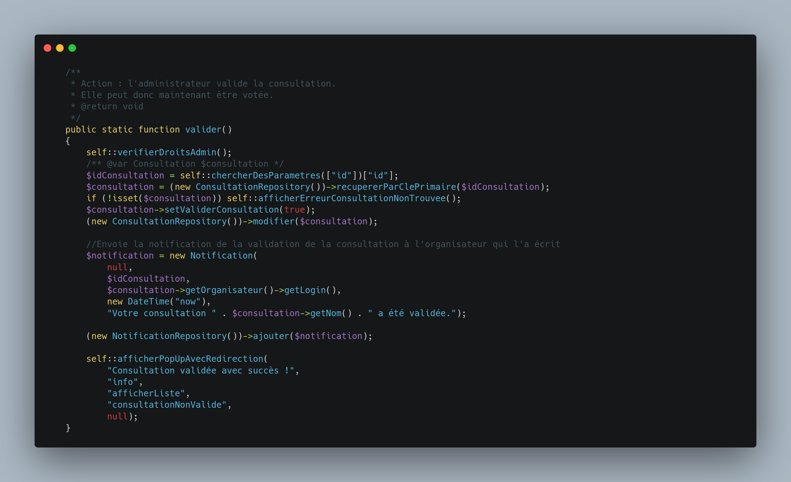
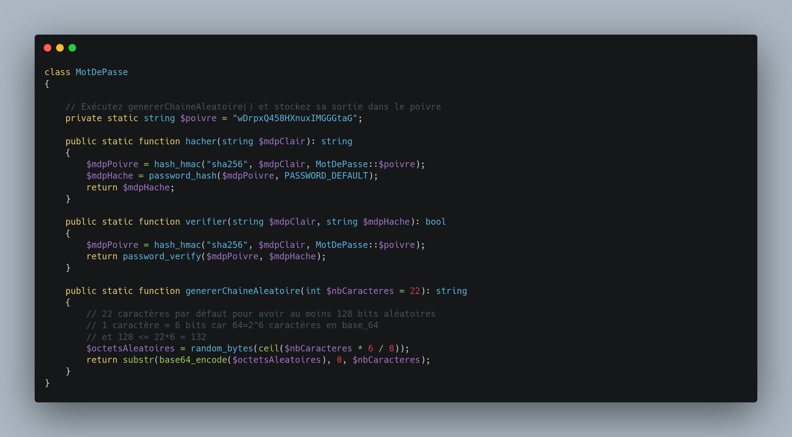
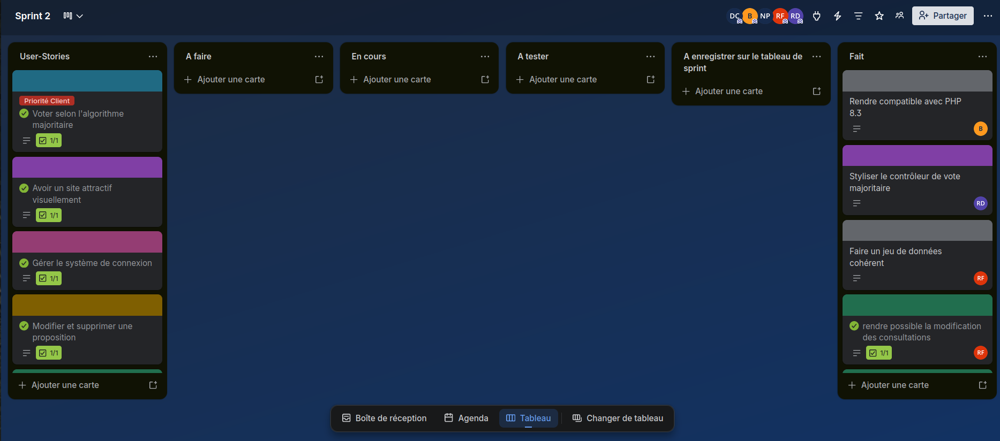

Projet de conception d'une plateforme de vote démocratique
VoxPopuli – Plateforme de vote démocratique
Équipe : 4 développeurs
Durée : 3 semaines (méthodologie Agile)
Description : Application web pour des votes démocratiques en ligne.
Type de projet : Universitaire
Contraintes : Temps, collaboration en équipe, respect des spécifications.
Technologies utilisées : MVC, bases de données sécurisées, HTML, BULMA, PHP, gestion des sessions utilisateurs.
Contribution personnelle :
- Système d’authentification complet (inscription/connexion).
- Redirections intelligentes pour améliorer l’expérience utilisateur.
- Notifications utilisateur et système de notification personnalisées.
- Sécurité des données (chiffrement des mots de passe).
- Travail et gestion d'équipe.
- Gestion de l'avancé du groupe en utilisant Trello.
Compétences développées :
- Maîtrise du pattern MVC.
- Bonnes pratiques de sécurité.
- Optimisation des flux utilisateurs.
- Communication non violente (CNV).
- Transparence client.
- Adaptabilité aux changements.
Bilan et perspectives :
VoxPopuli a renforcé mon intérêt pour les projets à impact social et a confirmé l’importance de la confiance dans le développement logiciel.
Trace du système de connexion :
Un système d’authentification robuste n’est pas seulement une formalité technique : c’est le fondement de la crédibilité, de la sécurité et de l’équité d’une plateforme de vote en ligne.
C'est pourquoi, j'ai réalisé un système de connexion :

Dans cette vidéo, on peut voir plusieurs cas de figures :
- Le login n'existe pas.
- L'utilisateur se trompe dans son mot de passe.
- L'utilisateur essaie de réaliser une injection SQL.
Voici le code qui permet de gérer la connexion de l'utilisateur :

Dans le code ci-dessus, j'ai réalisé de nombreuses vérifications.
Via un système de pop-up qui s'affiche, j'ai pu rendre une bonne expérience utilisateurs et supprimer des vues inutiles.
Optimisation de l’Expérience Utilisateur (UX) : Gestion des Redirections Post-Connexion :
Comment j’ai transformé une frustration en un parcours utilisateur fluide et intuitif.
Le problème initial : une rupture dans le parcours utilisateur
Scénario classique (et problématique) :
- Un utilisateur non connecté clique sur un bouton pour voter, consulter une proposition, ou accéder à une page réservée.
- Au lieu d’être guidé vers l’action souhaitée, il atterrit sur une page d’erreur générique (ex. : "Vous devez être connecté pour accéder à cette page").
- Conséquences :
- Frustration : L’utilisateur doit rechercher manuellement la page initiale après connexion.
- Abandon : Risque qu’il quitte le site, surtout sur mobile où la navigation est moins intuitive.
- Manque de professionnalisme : Une UX maladroite nuit à la crédibilité de la plateforme.
Ce problème est courant sur les sites avec des zones restreintes, mais il est critique pour un outil démocratique où chaque voix compte.
Première solution : Redirection vers la page de connexion
Implémentation basique :
- J'ai réalisé des vérifications systématique du statut de connexion avant toute action protégée.
- Si l'utilisateur n'est pas connecté, je le redirige vers le formulaire de connexion.
Limite majeure :
Après connexion, l’utilisateur est redirigé vers la page d’accueil (ou un tableau de bord par défaut), pas vers l’action initiale.
Exemple : Il voulait voter pour la proposition #42 → après connexion, il doit re-trouver cette proposition.
Solution améliorée : Stocker la "destination" dans l’URL
Principe :
J'ai ajouter un paramètre redirect dans l’URL de la page de connexion, contenant l’URL de la page originale. Exemple : /login?redirect=/propositions/42/vote
Avantages :
- Après connexion, l’utilisateur est automatiquement redirigé vers
/propositions/42/vote. - Simple à implémenter (via les query strings).
Nouveau problème :
Certaines actions nécessitent plus qu’une simple URL pour fonctionner. Exemples concrets dans VoxPopuli :
- Voter pour une proposition : Il faut connaître l’ID de la proposition et le type de vote (pour/contre/abstention).
- Consulter un résultat : Il faut parfois des filtres (ex. : "résultats par circonscription").
- Modifier un profil : Certains champs pré-remplis dépendent du contexte.
→ Une simple URL ne suffit pas pour restaurer l’état exact de la page.
Solution finale : Un champ params dynamique dans l’URL
Comment ça marche :
Détection de l’action initiale :
Quand un utilisateur non connecté tente d’accéder à une action protégée, le système :
- Je capture le controleur et l'action suivante (ex. :
afterControleur=proposition&afterAction=voter¶ms=id=42). - Je stocke les données dans un champ
params.
Visuel du site :

Extrait de mon code de redirection :

Système de Notifications : Pourquoi et comment il résout un problème clé dans VoxPopuli ?
Contexte : Un Besoin Client Incomplet
Demande initiale du client :
Permettre à l’administrateur du site de valider les consultations (ex. : une proposition citoyenne).
Problème identifié :
Le client n’avait pas prévu de mécanisme pour avertir l’organisateur (créateur de la consultation) que sa demande avait été validée, rejetée, ou modifiée.
Conséquence :
L’organisateur devait vérifier manuellement le statut de sa consultation (perte de temps, risque d’oubli, frustration).
→ Un processus démocratique repose sur la transparence et la réactivité : sans notification, le système devenait opaque et peu efficace.
Pourquoi un Système de Notifications Était Indispensable
Améliorer l’Expérience Utilisateur (UX) pour les Organisateurs
Sans notifications :
L’organisateur doit rafraîchir constamment la page ou contacter l’administrateur pour savoir si sa consultation est validée.
Exemple : Un militant associatif qui lance une pétition ne sait pas si elle est en ligne → découragement.
Avec notifications :
Message clair et instantané : "Votre consultation 'Réforme des transports' a été validée par l’administrateur. Elle est maintenant visible par les votants."
Gain de temps : L’organisateur peut se concentrer sur la mobilisation plutôt que sur le suivi administratif.
Renforcer la Transparence et la Confiance
Dans un outil démocratique, chaque acteur doit savoir où en est son initiative.
Les notifications documentent les décisions (ex. : date de validation, nom de l’administrateur) → traçabilité en cas de litige.
Exemple : Si un organisateur conteste un rejet, les logs des notifications servent de preuve.
Réduire la Charge de Travail de l’Administrateur
Sans notifications :
L’administrateur reçoit des emails ou messages répétés du type "Ma consultation est-elle validée ?".
Avec notifications :
Automatisation : Le système informe l’organisateur → moins de sollicitations manuelles.
Bénéfice : L’administrateur peut se concentrer sur des tâches à plus forte valeur (ex. : modération, analyse des résultats).
Éviter les Erreurs et les Oublis
Scénario risque :
Une consultation est validée, mais l’organisateur ne le sait pas → pas de communication aux votants → faible participation.
Avec notifications :
L’organisateur est alerté en temps réel et peut lancer sa campagne de mobilisation.
Voici le code du controleur de notification que j'ai réalisé :

C'est ce code qui va permettre de réaliser l'affichage de tous les notifications et de les supprimer.

Démonstration de la validation des consultations sur le site que j'ai réalisées :

Sécurité des données (chiffrement des mots de passe)
Dans le développement de notre plateforme VoxPopuli, j'ai compris à quel point la sécurité des mots de passe est un enjeu critique pour toute application manipulant des données utilisateurs. Le chiffrement des mots de passe n'est pas une simple bonne pratique - c'est une obligation éthique et technique qui protège à la fois les utilisateurs et la réputation du service.
Pourquoi chiffrer les mots de passe ?
Protéger les utilisateurs contre les fuites de données
- Même avec les meilleures protections, aucune base de données n'est à l'abri d'une intrusion
- Des entreprises comme LinkedIn, Yahoo ou Adobe ont subi des fuites massives de données
- Sans chiffrement, les mots de passe seraient directement exploitables par des pirates
Respecter les obligations légales
- Le RGPD en Europe impose des mesures de sécurité strictes pour les données personnelles
- En cas de fuite de mots de passe non chiffrés, l'entreprise s'expose à des sanctions lourdes
- C'est une question de conformité autant que de sécurité
Préserver la confiance des utilisateurs
- Un utilisateur qui découvre que son mot de passe a été compromis perdra confiance dans le service
- La réputation d'une plateforme se construit aussi sur sa capacité à protéger les données
- Dans un contexte démocratique comme VoxPopuli, cette confiance est encore plus cruciale
Les bonnes pratiques de chiffrement
Pour notre projet, nous avons mis en place un système robuste :
Le hachage avec salage (salt)
- Nous utilisons des algorithmes de hachage modernes comme bcrypt
- Chaque mot de passe est associé à un "sel" (salt) unique
- Même deux mots de passe identiques auront des hachages différents
Le poivre (pepper)
- Une couche supplémentaire de sécurité avec une clé secrète globale
- Protège contre les attaques par dictionnaire même si la base est compromise
Des algorithmes adaptés
- Évitement des algorithmes rapides comme MD5 ou SHA-1
- Utilisation de fonctions de hachage lentes et coûteuses en calcul
- Paramétrage pour résister aux attaques par force brute
Les conséquences d'une mauvaise gestion
Une base de données contenant des mots de passe en clair ou mal protégés expose à :
- Des attaques par réutilisation de mots de passe (credential stuffing)
- Des vols d'identité si les utilisateurs réutilisent leurs mots de passe
- Des responsabilités juridiques en cas de fuite de données
- Une perte de crédibilité irréversible pour le service

Collaboration et gestion de projet : Leçons apprises
Ce projet universitaire en équipe de 5 personnes, réalisé en seulement 3 semaines, a été une véritable école de la collaboration et de la gestion de projet. Travailler dans un cadre aussi contraint m'a appris des leçons précieuses sur l'importance de l'organisation collective et de la flexibilité individuelle.
La collaboration a été le fondement de notre réussite. Dès le début, nous avons établi une répartition claire des tâches en fonction des compétences et des affinités de chacun. Cette organisation initiale nous a permis d'éviter les chevauchements de travail et les oublis. Nous avons mis en place des points réguliers (tous les 2-3 jours) pour faire le point sur l'avancement, partager nos difficultés et ajuster notre stratégie si nécessaire. Ces réunions courtes mais efficaces nous ont permis de maintenir une communication fluide et de garder tout le monde aligné sur les objectifs. J'ai particulièrement apprécié cette dynamique où chacun pouvait exprimer ses idées et ses préoccupations, créant ainsi un environnement de travail collaboratif et bienveillant.
La gestion du temps a été notre plus grand défi. Avec seulement 3 semaines pour livrer un projet complet, chaque minute comptait. J'ai appris à prioriser les tâches en fonction de leur importance et de leur urgence. Nous avons utilisé une approche inspirée des méthodologies agiles, en découpant le projet en petites étapes réalisables. Cette méthode nous a permis de :
- Identifier les éléments critiques à réaliser en premier
- Éviter la procrastination en fixant des échéances intermédiaires
- Garder une vision claire de l'avancement global
- Réajuster nos priorités en cours de route si nécessaire
Enfin, ce projet m'a enseigné l'importance de l'adaptabilité. Malgré une planification minutieuse, nous avons dû faire face à des contraintes techniques imprévues et des retards dans certaines tâches. Plutôt que de nous décourager, nous avons appris à :
- Réévaluer nos objectifs en cours de route
- Trouver des solutions créatives pour contourner les obstacles
- Accepter les compromis quand nécessaire, sans sacrifier la qualité
- Rester flexibles dans nos méthodes de travail
Cette expérience intense m'a montré que le succès d'un projet ne dépend pas seulement des compétences techniques, mais aussi de la capacité à travailler ensemble efficacement, à gérer son temps intelligemment et à s'adapter aux imprévus. Ces compétences en gestion de projet et en travail d'équipe sont devenues pour moi aussi importantes que les compétences techniques purement informatiques, et je suis convaincu qu'elles me seront précieuses tout au long de ma carrière.
Gestion de l'avancé du groupe en utilisant Trello
Lors de ce projet, j’ai endossé le rôle de Scrum Master, une fonction centrale visant à accompagner l’équipe au quotidien. Mes responsabilités incluaient le suivi de l’avancement des tâches, l’évaluation de la charge de travail individuelle, ainsi que la capitalisation sur les livrables réutilisables pour optimiser l’efficacité collective.
Cette expérience m’a également permis de découvrir et maîtriser Trello, un outil collaboratif qui s’est révélé indispensable pour notre organisation. Grâce à cette plateforme, nous avons pu attribuer clairement les tâches, visualiser en temps réel l’état d’avancement du travail, et ainsi fluidifier la coordination entre les membres de l’équipe. Trello a joué un rôle clé dans la transparence et la réactivité de notre processus de développement.
